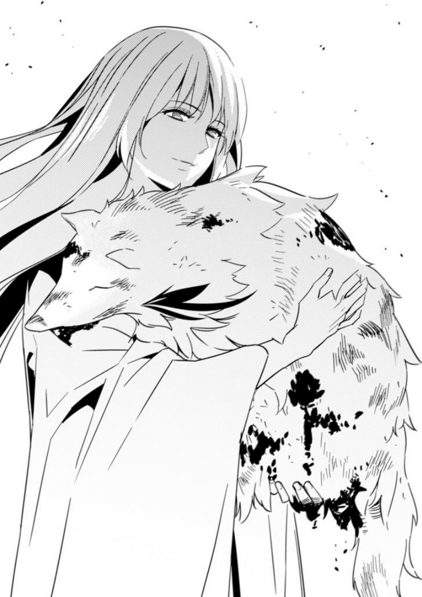

Fate/Strange Fake 1 Prólogo VI
A floresta era profunda, tão profundamente profunda... Ele parecia ter caído em um pântano sem fundo.
Corra corra corra corra corra Corra Corra CORRA corra
Ele disparava pela floresta, rasgando a noite enquanto avançava. Será que realmente havia pensado no motivo exato de estar correndo? Talvez.
Suas ações podiam ser descritas pelo verbo simples "fugir", mas ele não tinha condições de refletir sobre esse verbo e correr ao mesmo tempo. Poderíamos dizer que a razão pela qual ele estava "fugindo"...
Em outras palavras, o desejo de "viver" era o que o impelia a seguir adiante. Agia por instinto, não por razão. Era impulsivo, não racional. Nem sequer sabia se de fato deveria fugir. Apenas saltava para a frente, de novo e de novo, sem parar.
Há quanto tempo estava correndo? A cada passo, suas pernas gritavam em agonia. A dor irradiava por todo o corpo sem atenuação.
Mas precisava continuar. Seu corpo não queria parar, nem sua mente. Talvez as endorfinas já tivessem se esgotado. Onda após onda de dor pura varria seu corpo, repetidas vezes e...
...? Ainda assim, seu feroz instinto era forte o bastante para levá-lo adiante. As árvores passavam por ele como uma brisa e, de fato, pela forma como abria caminho pela floresta, era como se ele próprio tivesse se tornado o vento. No exato momento em que estava prestes a chegar ao fim dessa brisa...
Uma bala reforçada por magia perfurou o vento. "?!" Antes mesmo que pudesse sentir dor, seu corpo foi tomado pelo choque.
Seu impulso o carregou ao chão. A terra golpeou seu corpo sem piedade. Como se fosse a retribuição pelos chutes que suas pernas haviam dado no solo enquanto corria, o vasto chão se transformou em uma arma e o espancou.
"~~~~~~ ?!" Um grito sem voz. Por mais que tentasse se erguer, as convulsões que sacudiam seu corpo não deixavam.
Enquanto sua mente ouvia o corpo gritar de dor, seus ouvidos captaram uma voz baixa ecoando. "...você me causou um belo problema." O locutor parecia controlado, mas sob a calma aparente havia sinais claros de fúria.
O homem, que parecia ser um mago, abaixou o revólver pesadamente ornamentado e pisou com cuidado no estômago do fugitivo abatido e, então, enfiou o cano ainda quente da arma dentro do ferimento aberto de bala.
Houve um chiado quando a carne do fugitivo foi chamuscada. O cheiro de carne queimada se espalhou pela floresta.
O fugitivo abriu a boca mais do que deveria ser possível e exalou ar úmido das profundezas da garganta.
"Isso é absurdo. De tudo que podia ter acontecido, você recebeu os Selos de Comando! Que farsa!"
O fugitivo se debatida em silêncio, soltando um grito mudo. Havia, sem dúvida, marcas semelhantes a correntes em seu corpo, marcas que pareciam Selos de Comando.
"Por que você acha que me dei ao trabalho de criá-lo? Por que acha que amplifiquei seus Circuitos Mágicos até o limite máximo? Por que acha que sequer deixei você viver por tanto tempo?"
O mago balançou a cabeça em silêncio e chutou o fugitivo, ainda se contorcendo de dor, como se fosse uma bola de futebol.
"...Para vencer a Guerra do Santo Graal, preciso invocar um ser que transcenda todos os Heróis." Ele se aproximou do fugitivo e pisoteou seu rosto outra vez. "Se eu não invocar um ser que exceda todos os Heróis, um ser com tamanho poder que possa ser chamado de deus, não tenho esperança de derrotar aqueles..."
"...Heróis que são chamados de reis." E pisou nele outra vez. "E, se chegou a isso... não tenho escolha senão invocar um ser mais antigo que o primeiro Herói, um daqueles do Egito que se tornaram deuses."
E continuou a pisoteá-lo. "Mas até o poder dos Selos de Comando, combinado com o poder latente desta terra, não basta para trazer à tona um ser tão poderoso quanto um deus. Eu também preciso violar algumas restrições para conseguir..."
"...isso." E então o esmagou.
"E você... você deveria ter sido meu catalisador! Um catalisador para invocar um deus! Por que recusaria essa honra!? Você retribuiu minha bondade com malícia!"
O fugitivo já não conseguia sequer tentar gritar. Mal enxergava algo além da escuridão da noite e do vermelho cada vez mais espalhado de seu próprio sangue.
E, ainda assim... mesmo respirar tendo se tornado doloroso para ele... enquanto engolia o sangue que escorria de sua garganta, tentava de novo se levantar. Ao ver que o fugitivo se recusava a aceitar a derrota, o mago suspirou e pousou o pé nas costas dele, esmagando-o com crueldade sob o próprio peso. "Chega disso. Tenho qualquer quantidade de substitutos à espera... Você vai me devolver os Selos de Comando. Depois disso, vai morrer. E morrerá da maneira que eu determinar. Vou jogá-lo numa fornalha e usar seus restos para criar um novo sujeito experimental."
Estendeu a mão direita em direção aos Selos de Comando do fugitivo. O fugitivo pouco se importava com Selos de Comando e coisas do gênero. Nem sequer conhecia a expressão "Guerra do Santo Graal", muito menos seu significado. viver. Ele, como ser vivo, apenas obedecia aos instintos que brotavam dentro de si. viver. viver. Mesmo naquele momento, com o fim se aproximando, esses instintos não tinham enfraquecido nem um pouco. viver. viver. viver. era só disso que ele tinha consciência. viver. viver. viver. viver viver viver viver viver. viver. viver. viver viver viver viver viver. viver. viver. viver. viver. viver. viver. viver. viver viver viver viver viver viver viver viver viver viver viver viver viver viver viver viver viver viver viver viver viver viver viver viver viver. viver viver viver viver viver viver viver viver viver viver viver.
Viver viver viver viver viver viver viver viver viver viver viver viver viver viver viver viver viver viver viver viver viver viver viver viver viver viver viver viver viver viver viver viver viver viver viver viver.
Viver! Não era "eu não quero morrer". Tampouco era exatamente "eu quero viver". Não era desejo, mas simples instinto, a mera esperança de "viver".
Será que ele próprio tinha percebido essa diferença? Ou então... ele sequer possuía meios de expressar a noção de "eu não quero morrer"? Seu corpo lentamente parou, mas... dentre todos os seres vivos da região de Snowfield, sua vontade era a mais forte. E, com essa vontade poderosa, ele gritou.
"———————" O mago não percebeu o significado daquele grito e, por isso, não notou: que, naquele instante, o ritual havia sido concluído. Que aquele grito era só dele; que era sua própria forma de magia; que eram palavras de invocação.
O mago não sabia disso. Apenas um instante antes, o quinto Servo havia sido invocado no desfiladeiro ao norte e... parecia que o Santo Graal falso estava com um pouco de pressa para manifestar o sexto Servo. É claro que, desde o princípio daquela Guerra do Santo Graal, com a invocação de Rider, a natureza do ritual de invocação sempre fora um tanto nebulosa.
Mas, de todo modo, foi naquele momento que... o sexto Servo finalmente desceu sobre as florestas de Snowfield. Uma luz brilhante rasgou a mata, e um redemoinho poderoso fez balançar as árvores ao redor. O mago foi arremessado alguns metros pela ventania. Surpreso, preparou a arma, mas então sentiu um enorme fluxo de energia mágica e fortaleceu os Circuitos Mágicos. "O qu..."
Diante de seus olhos surgiu um ser vestido apenas com uma peça simples de tecido. Que se tratava de um Espírito Heroico era evidente pela energia mágica esmagadora que jorrava dele.
Ao mesmo tempo, havia algo de estranho ali. Parecia simples demais para ser um Herói. Não parecia possuir nada que realmente pudesse ser chamado de "equipamento", e suas roupas pareciam bastante pobres. Claro, não é como se o valor de um Herói dependesse do valor de suas posses materiais, mas... ainda assim, que tipo de Herói estaria sem uma única arma?
Ele observou o ser com cuidado. Uma mulher? Só pelo rosto, chamaria aquilo de mulher. Tinha pele lustrosa e traços suaves. No entanto, o peito e o quadril estavam escondidos pelo tecido folgado. Só os membros se projetavam para fora da roupa, e eles pareciam firmes e tensionados.
N-não, espere... talvez seja um homem... ...? Qual dos dois...? O rosto do Servo parecia conservar traços vagamente infantis, o que facilitava interpretá-lo tanto como masculino quanto feminino. De qualquer forma, o corpo era firme. Tensionado como uma mola comprimida, parecia capaz de disparar da mesma maneira. Isso era evidente a olho nu. Homem ou mulher, seu rosto ainda assim era belo.
É... isso é sequer... humano...? O mago sentiu um breve constrangimento. Certamente possuía um rosto humano, mas havia algo desconfortável nele. Não conseguia encontrar palavras para descrever, mas havia sem dúvida algo errado. Talvez fosse simplesmente perfeito demais. Não havia nada visualmente anormal, porém o corpo inteiro exalava uma aura estranha, algo como um manequim. Era como se fosse um boneco, num sentido mágico.
Ele não conseguia discernir bem sua constituição, talvez por causa das vestes largas. Ficava cada vez menos certo se o Espírito Heroico era homem ou mulher, ou mesmo se era humano ou algo totalmente diferente.
Ainda assim, uma coisa era certa. Aquele Herói era de uma beleza insuportável. Um ser paradoxal, possuindo ao mesmo tempo a impureza característica da humanidade e a imaculabilidade inerente à natureza.
Seu corpo lembrava os galhos aveludados que envolvem a estátua de Vênus. Era como se a forma daquele Espírito Heroico desafiasse qualquer classificação: homem ou mulher; humano ou besta; deus ou demônio.
Com a floresta às costas, o Espírito Heroico, um ser de perfeita harmonia, deixou seus cabelos lustrosos ondularem ao vento e...
"É você... o Mestre que me chamou?" perguntou ao fugitivo ferido, caído diante dele.
Ah, que voz gentil. Sua voz também era andrógina. No fim, o mago jamais descobriria sua verdadeira identidade.
O fugitivo ficou aturdido com o clarão e a rajada de vento que acompanharam sua aparição, mas, quando lançou um único olhar para aquele ser, soube.
Aquele que está diante de mim não é meu inimigo. Ele sabia que essa era uma verdade absoluta. Por um breve momento, suprimiu o impulso de fugir e encarou intensamente seu salvador.
Seus olhos eram puros demais, como se imaginasse o que existia dentro da própria alma do Espírito Heroico.
Ele se ajoelhou silenciosamente quando o fugitivo se ergueu cambaleando, de modo a poder olhá-lo nos olhos e...
"____ ___ ________" disse, em palavras que o mago não conseguiu entender. O fugitivo respondeu. "______ ______", retrucou ele, mais uma vez em voz baixa. Então, o Espírito Heroico estendeu os braços e ergueu o fugitivo ferido. "Obrigado. Formamos um contrato." Falou como quem se dirige a um amigo de incontáveis anos e, assim, o fugitivo sentiu alívio. A vida lhe foi concedida. Seu coração se encheu de emoção. Sabia que não precisaria mais fugir e, por fim, pôde desabar.
"Im... impossível... impossível! Isso não pode estar acontecendo!" Seus gritos ecoaram pela floresta. Incapaz de entender o que via, o mago brandiu a arma em todas as direções. "Isto é um absurdo! Não vou aceitar isso!", gritou. Enquanto fazia isso, apontou a arma. E na ponta de seu cano estava...
Um lobo de pelagem prateada, manchado de sangue e terra, repousando nos braços do Herói.
"Seu troglodita! Isso... você não tem sequer habilidades dignas de nota! É apenas uma quimera! E ainda assim é um Mestre!? Não consigo acreditar!"
O mago continuou brandindo ferozmente sua arma ornamentada, mirando com cuidado. "Por favor, abaixe sua arma. Meu Mestre não deseja lhe fazer mal", disse o Espírito Heroico, em voz baixa. "O qu...?" Ele se surpreendeu com a polidez da fala, mas, mais importante, ficou perturbado com o conteúdo da afirmação.
"Como assim!? Que sofisma..." "Posso compreender a língua da espécie dele... e, de todo modo, não é difícil imaginar o que você fez ao meu Mestre."
O mago tentou debochar do Servo, mas o outro continuou falando, com expressão solene. "Ainda assim, meu Mestre não deseja lhe fazer mal. ...Você entende o que isso significa?"
Com isso, virou-se de costas para o mago e começou a caminhar lentamente em direção à borda da floresta.
"E-espere! Por favor, espere! Você deseja o Santo Graal, não deseja!? Não concorda que teria uma chance melhor de obtê-lo se eu fosse seu Mestre, em vez desse vira-lata sarnento...?"
E, quando o Espírito Heroico ouviu aquilo, parou no meio do passo e...
Voltou-se. Só isso. E, imediatamente, o mago soltou um breve grito. Ainda segurando a arma, virou as costas para o Espírito Heroico e para o lobo e saiu disparado pela floresta.

Tão avassalador era o poder de interdição naquele olhar. Assim que viu o mago desaparecer de seu campo de visão, o Espírito Heroico apagou a dureza dos próprios olhos e partiu rumo ao rio, para cuidar do animal que havia aceitado como Mestre.
Ele não conseguia ouvir o som da água corrente, nem vê-la, mas... ainda assim podia sentir a presença da água logo adiante. Então impulsionou-se contra o chão, segurando o lobo com gentileza junto ao peito, e saltou pela floresta com a velocidade de um falcão.
Enquanto rasgava a mata, o mago berrava por dentro. "aa aAA aaaaAAA AAaaaAAAAaAAAaaaaaAaa!" Aquele que antes perseguia agora era perseguido, enquanto se esquivava de árvore após árvore. Por quê! Por quê! Por quê! Por quê, por quê, POR QUÊ!? Por que razão... aquele maldito vira-lata!? Por que não eu!? Nem o Espírito Heroico nem o lobo prateado o perseguiam. Ele sabia disso e, ainda assim, corria com toda a força que as pernas podiam reunir. Fugia da vergonha insuportável e da realidade imutável que o acompanhavam.
Depois de correr por um tempo, o mago percebeu que em algum momento havia saído da floresta e se lembrou de que seu ateliê ficava perto dali. Só então conseguiu desacelerar as pernas.
E, quando por fim parou por completo, virou-se para a floresta. "Mas... que Espírito Heroico foi aquele...?", perguntou a si mesmo. Havia refinado toda a magia desenvolvida por ele e seus ancestrais para criar aquela quimera. O corpo da criatura continha muito mais Circuitos Mágicos do que o de um mago comum. É verdade que sua expectativa de vida, tanto como oferenda quanto como ser vivo, era extremamente curta, mas não importava, pois ela existia apenas como catalisador para invocar um Espírito Heroico. E, ainda assim, ela, de todas as coisas, recebeu os Selos de Comando.
Mesmo com toda sua experiência como mago, ele não conseguia compreender como uma simples besta, uma besta que nem sequer entendia o que era a Guerra do Santo Graal, podia se tornar Mestre.
"Era um Herói com alguma ligação com animais...? Mas aquilo era só uma quimera, nem animal era de verdade. Era um boneco de carne. Talvez fosse um Herói com alguma ligação com... quimeras...?"
Como o lobo parecia bastante um cachorro, o mago também considerou a possibilidade de o Servo ser o cão dos celtas. No fim, porém, não conseguia conciliar sua imagem daquele guerreiro feroz com o que havia visto no Espírito Heroico.
"Tsc... bem, tudo bem. Eu simplesmente terei que roubar os Selos de Comando dele. Não, na verdade, os Selos de Comando de qualquer um servem. Melhor começar logo. Se eu mandar o restante das minhas quimeras atrás deles quando entrarem na cidade, ao menos conseguirei dar conta daquele vira-lata..."
Ele já havia recuperado o ânimo, com os sentidos de volta ao lugar. Era realmente digno de elogio como mago. Infelizmente, o que o aguardava não era elogio, mas... "Não, senhor, isso a gente realmente não pode permitir." "...?! ..." "Preferiríamos muito não ter mais fontes de incerteza. Minhas mais humildes desculpas." Aquelas palavras frias gelaram-lhe os ossos.
"..." O mago abriu a boca para perguntar quem estava ali. Da garganta não saíram palavras, mas sangue quente e vermelho.
"Já temos magos andando pela cidade que não manifestaram Selos de Comando. Seria um saco se você saísse causando problemas além da Guerra do Santo Graal. A Associação e a Igreja já dão trabalho suficiente. Não podemos nos dar ao luxo de fazer da milícia uma inimiga, entende? Eles são servidores públicos, afinal."
Ao ouvir aquela voz, o mago percebeu que o homem parado à sua frente era um homem que fora discípulo do manipulador de bonecos Rohngall, um homem da Associação chamado Faldeus.
É claro que, para o mago, mais importante do que as afiliações de Faldeus era a questão de como impedir seu pescoço de continuar jorrando sangue.
"Ah, não, não se dê ao trabalho. Só escute como está. Não tenho qualquer desejo particular de responder às suas perguntas, nem planejo deixá-lo viver. Por isso, tomei a liberdade de cortar sua garganta."
Faldeus girou lentamente um canivete suíço na mão. Gota após gota de vermelho escorria dele. Não era uma arma ritualística, do tipo usado normalmente por magos, mas uma faca comum, dessas que se encontraria em qualquer loja de artigos para atividades ao ar livre.
"Tsc-tsc. Mesmo que não esperasse por isso, você não devia cair diante de uma faca sem encantamento algum. Seus ancestrais devem estar chorando."
"----.----- ." Um som sibilante saiu da garganta do mago, mas ele já era incapaz de respirar.
Perdia a consciência rapidamente. "...Pensando bem, quem é você, afinal? Ah, tanto faz. Não é como se você fosse conseguir responder de qualquer forma", disse Faldeus.
Enquanto olhava de cima para o mago, mantendo a guarda alta como sempre, Faldeus moveu devagar a mão direita.
O mago sentiu um choque. E aquilo foi o fim. Sua consciência o deixou para nunca mais voltar. Quando Faldeus moveu a mão, incontáveis balas cruzaram o ar e despedaçaram o corpo do mago.
Diante daquela visão grotesca, Faldeus permaneceu sem emoção. Talvez por não conseguir sequer imaginar a possibilidade de uma bala perdida atingi-lo, nem mesmo respirou mais pesado enquanto os disparos cruzavam o espaço à sua frente.
Assim como quando fez destruir o boneco de Rohngall, os tiros estavam abafados. Uma força de chumbo dançava através daquilo que havia sido o corpo do mago.
Quando cerca de metade do mago já havia sumido, Faldeus moveu a mão outra vez. Em menos de um segundo, a chuva de balas cessou. Faldeus sentou-se numa rocha próxima. Só então sua expressão relaxou um pouco.
"Perdoe-me. Sou um tanto tagarela, veja bem. Nunca sei quando vou acabar deixando escapar informação confidencial, então não consigo ter uma conversa de verdade a menos que esteja falando com um cadáver", disse com cortesia ao monte de carne que, obviamente, não podia ouvi-lo, muito menos entendê-lo.
"Tenho que admitir que estou um pouco preocupado com o que os Kuruoka invocaram... E, sendo sincero, você também criou uma bela confusão. Dei uma olhada no seu ateliê e... bem, fico surpreso que tenha tentado invocar algo no nível de um deus. Isso é uma infração ao sistema. Você não sabia? Guerras também têm regras." Faldeus falava fluentemente e à vontade agora que conversava com um cadáver. Sua antiga reserva havia desaparecido por completo.
"Mesmo que tudo isso não passe de algum tipo de teste para nós, ainda precisamos que vocês tenham um pouco de autocontrole."
Ao contrário de quando mandou destruir o boneco de Rohngall, desta vez não havia um exército de subordinados ao seu redor. Além disso, estava falando com um cadáver de verdade, não com um simples boneco.
"Dei uma olhada nas imagens que captamos na floresta... e, bem, é impressionante que ele, ou talvez ela, então melhor dizer 'isso'... enfim, é impressionante que tenha podido ser invocado como Espírito Heroico. Se você tivesse conseguido convocá-lo como Berserker, muito possivelmente teria obtido o poder divino que tanto desejava."
Parecia que Faldeus realmente estava surpreso com o que vira, a julgar pelo estado emocional demonstrado.
Talvez fosse uma surpresa agradável para ele. Um sorriso apareceu em seu rosto. "Bem, o sistema não deveria permitir algo assim, mas, visto que há anomalias por toda parte, eu não depositaria tanta fé nisso. Ora, alguém pode até ter invocado alguma coisa absolutamente impronunciável em um esconderijo secreto por aí. Por outro lado, aquilo que seu bichinho invocou já é bastante impronunciável por si só." Faldeus gesticulava enquanto falava, como se conversasse com um velho amigo. Com um cadáver no chão diante de si, falava consigo mesmo para reforçar a própria compreensão da situação. "Para começar, isso nunca foi exatamente um Herói..."
"...e sim um Fantasma Nobre dos próprios deuses."
É claro que aquele Herói tinha corpo humano. Porém, não era humano. Há muito, muito tempo, os deuses moldaram um boneco de argila e o enviaram à terra para aparecer dentro de uma floresta. Aquele boneco não era homem nem mulher; era algo fantasmagórico.
Não possuía conhecimento humano e, por isso, brincava pela floresta como uma besta. Ainda assim, tinha um poder que superava a compreensão dos homens. Diziam que, quando se enfurecia, era mais poderoso até que o Herói que governava certo reino naquela época.
Aquele rei riu do boneco com desprezo. "Minha força não pode sequer ser comparada à de uma besta", disse, recusando-se até a olhá-lo.
O rei acreditava que seu poder era supremo, que não poderia existir ser mais forte do que ele. Assim, afastou com uma risada os rumores sobre a besta.
Quando aquela besta encontrou uma célebre hieródula, porém, seus destinos mudaram para sempre. Quando aquela massa de argila sem gênero encontrou aquela mulher cuja beleza transcendia o gênero, apaixonou-se à primeira vista.
Ao passarem seis dias e sete noites juntos, compartilhando refeições e cama, o boneco de argila lentamente assumiu forma humana, como se tentasse imitar aquela bela prostituta.
A besta de argila, ignorante da humanidade, tentou tomar para si a beleza daquela prostituta. Quando fez daquela beleza paradoxal algo seu, o boneco de argila perdeu boa parte de sua força. Em troca, ganhou sabedoria e razão humanas.
Embora tivesse perdido grande parte de sua divindade, seu poder ainda excedia em muito o do homem.
E então, o boneco, agora dotado do corpo e da sabedoria de um ser humano, colocou-se diante daquele rei poderoso.
Travaram uma batalha que sacudiu os céus e a terra e, quando ela terminou, cada um reconheceu a força do outro.
O rei dourado e o boneco de argila. Certamente não poderia haver seres mais diferentes entre si. Ainda assim, cada um se tornou o único amigo do outro. Partiram juntos em incontáveis aventuras, compartilhando dor e prazer um com o outro.
E então, milênios depois daqueles dias de ouro e terra, seus destinos mudaram de novo para sempre.
Junto a um riacho a uns dez quilômetros de distância, o Espírito Heroico tratou de forma superficial os ferimentos do lobo prateado, seu Mestre, e o deitou para descansar.
"Preciso dizer... estou aliviado. Tive medo de que o mundo inteiro tivesse sido soterrado como Uruk, mas parece que ele continua tão belo quanto sempre foi."
Ele fitou a vasta natureza à frente. Usando a linguagem das bestas, descreveu o mundo ao seu Mestre, enquanto permanecia ao lado dele.
No entanto, o Mestre já havia caído em sono profundo e não respondeu. Rindo baixinho, o Servo se sentou e se entregou ao som da água corrente, quando...
De repente, virou o rosto para o norte. Usando sua habilidade de classe, Detecção de Presença, percebeu uma presença muito, muito ao norte. Uma presença extremamente familiar.
De fato, percebeu essa presença bem no momento em que o Espírito Heroico de armadura dourada saía da caverna.
"Pode ser...?"
Incapaz, a princípio, de acreditar no que o destino havia tramado, arregalou os olhos e... "...é você?" Tinha certeza de que a presença sentida ao norte não era outra senão a do rei que conhecia. Levantou-se devagar.
Um breve silêncio. Nesse intervalo, o que terá passado por sua mente? Perplexidade. Consternação. E, por fim... uma alegria avassaladora. O destino não apenas trouxera ambos à Guerra do Santo Graal, como também lhes oferecera outra oportunidade de travar combate mortal.
Mas e daí? Mesmo que ele arrancasse sua cabeça, e ele arrancasse seu coração, e daí? Os laços que os uniam não se desgastariam por causa de um ou dois duelos. Não, mesmo que matassem um ao outro mil vezes, esses laços permaneceriam intactos. "Haha..." Um sorriso muito natural surgiu em seu rosto. Abriu bem os braços e... "Que divertido seria continuar o duelo que travamos naquela praça." Com os braços estendidos, cantou em voz poderosa, do âmago de seu ser. Era uma voz gentil.
O Herói Enkidu.
Seu canto sacudiu a própria terra, tornando-se como uma bela ondulação do solo que alcançou cada canto da região de Snowfield.
Aquilo era a prova de que todos os Servos haviam se reunido... e também o sinal para o início da batalha. Todos os magos e Espíritos Heroicos haviam se reunido naquele palco falso. Buscavam dançar sobre ele, apesar de saberem que aquela Guerra do Santo Graal era falsa. Verdade e mentira eram secundárias diante de seus desejos. Eles lutavam não pelo Santo Graal, mas por suas convicções...
Era uma Guerra do Santo Graal somente para eles. Aquela foi a faísca que deu início à guerra.